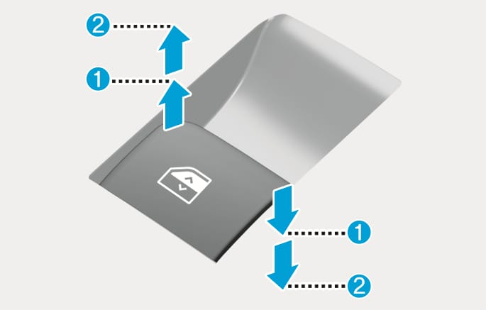
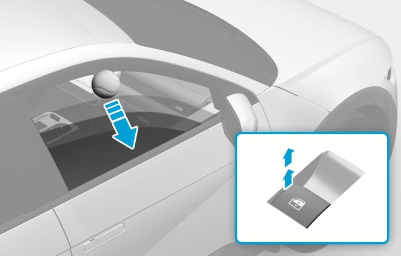
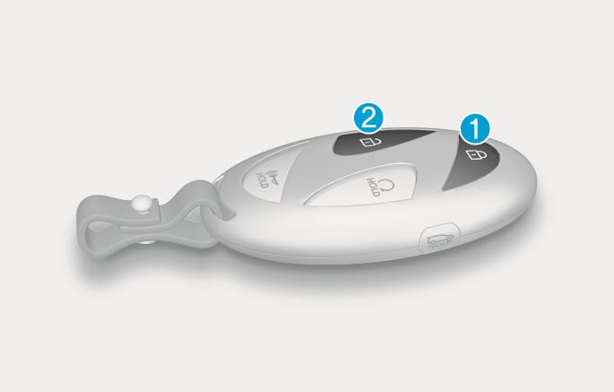

유리창 열고 닫기

2C_WindowAutoReverse
유리창 열림/닫힘 스위치를 살며시 누르거나 당기면(위치 1) 유리창이 조금씩 열리거나 닫히고, 스위치를 놓으면 유리창이 멈춥니다.
-
전동식 유리창을 작동하기 위해서는 차량 전원이 'ON' 상태이거나 시동이 켜져 있어야 합니다.
-
시동 'OFF' 또는 'ACC' 상태가 된 후에도 약 3분 동안 유리창을 작동할 수 있습니다. 단, 3분 이내라도 운전석이나 동승석 도어를 연 후에는 유리창을 작동할 수 없습니다.
-
주행 중 유리창을 열었을 때 진동이 느껴지는 경우, 반대편 유리창을 조금 열면 진동을 줄일 수 있습니다.
유리창 열림/닫힘 스위치를 끝까지 누르거나 당기면(위치 2) 유리창이 한 번에 끝까지 열리거나 닫힙니다.
유리창이 움직이는 중 원하는 높이에서 멈추게 하려면 유리창 열림/닫힘 스위치를 살짝 누르거나 당기십시오.
원터치 자동 유리창 초기화
원터치 자동 닫힘 기능이 정상적으로 작동하지 않는 경우 기능을 초기화할 수 있습니다.
-
시동을 걸거나 차량 전원이 'ON'일 때 유리창 열림/닫힘 스위치를 당긴 상태로 유지하십시오.
-
유리창이 완전히 닫히고 난 후 약 1초 정도 계속 스위치를 당긴 상태로 유지한 후 스위치를 놓으십시오.
물체 끼임 인식 기능(세이프티 파워 윈도우)

2C_WindowEmergencyStop
원터치 자동 유리창 열림/닫힘 기능으로 유리창을 닫을 때, 유리창에 물체가 끼인 것이 인식되면 유리창이 멈춘 후 다시 열립니다.
-
물체의 저항이 일정 정도 이하거나 스위치를 위치 1까지 살며시 당겨 수동으로 유리창을 닫는 경우 끼임 인식 기능이 작동하지 않습니다.
-
스위치를 위치 2까지 계속 당기고 있는 경우 물체 끼임에 의한 일정한 저항이 인식되면 유리창이 자동으로 멈춘 후 일정한 높이만큼 다시 열립니다.
-
끼임 인식 작동 후 5초 이내에 스위치를 위치 2까지 계속 당기는 경우 물체 끼임 인식 기능이 작동하지 않습니다.
-
바깥 기온이 매우 낮으면 유리창이나 도어가 얼어 유리창이 움직이지 않을 수 있습니다. 차량 시스템이 이런 상태를 물체 끼임으로 인식할 수 있으므로, 가급적 스위치를 살며시 당겨 유리창을 닫으십시오.
-
유리창에 안테나 등 액세서리를 장착한 상태로 유리창을 닫는 경우 물체 끼임 인식 기능이 작동하지 않을 수 있습니다.
-
유리창을 닫기 전에 장애물이 없는지 확인하십시오. 물체 끼임 인식 기능이 작동하더라도 약 4 mm 이하의 물체가 창문 위쪽에 끼거나 유리창에 일정한 저항이 가해지지 않는 경우에는 유리창이 아래로 내려가지 않습니다.
-
유리창 작동을 초기화하기 전에 장애물이 없는지 확인하십시오. 유리창 작동을 초기화하는 중에는 장애물이 감지되더라도 물체 끼임 인식 기능이 작동하지 않습니다.
-
유리창에 안테나 등 액세서리를 장착한 상태로 유리창을 닫는 경우 물체 끼임 인식 기능이 작동하지 않을 수 있습니다.

2C_ChildProtectRearDoorLockButton
운전석 도어의 유리창 열림/닫힘 잠금 버튼을 누르면 버튼의 표시등이 켜지며 뒷좌석의 유리창 스위치가 잠깁니다.
-
운전석과 동승석의 유리창 열림/닫힘 스위치는 모두 정상적으로 작동합니다.
-
뒷좌석의 유리창 열림/닫힘 스위치를 눌러도 유리창이 열리거나 닫히지 않습니다.
유리창 열림/닫힘 장치 손상 및 퓨즈의 수명이 단축되는 것을 방지하려면 다음 사항에 주의하십시오.
-
두 개 이상의 유리창 스위치를 동시에 조작하지 마십시오.
-
운전석 및 다른 좌석의 유리창 열림/닫힘 스위치를 동시에 서로 다른 방향으로 작동하지 마십시오.
-
어린이가 유리창 열림/닫힘 스위치를 작동하지 못하도록 하십시오. 어린이가 유리창을 잘못 작동하는 경우 심각한 부상을 입을 수 있습니다.
-
뒷좌석에 어린이가 탑승한 경우, 운전석의 유리창 열림/닫힘 잠금 버튼을 눌러 뒷좌석 유리창 조작 스위치를 잠그십시오.

2C_RemoteWindowOpenButton
시동이 꺼진 상태에서 스마트 키를 이용해 원격으로 유리창을 제어할 수 있습니다.
-
스마트 키의 도어 잠금 버튼(1)을 3초 이상 길게 누르면 도어가 잠기고 유리창이 올라갑니다.
-
스마트 키의 도어 잠금 해제 버튼(2)을 3초 이상 길게 누르면 도어 잠금이 해제되고 유리창이 내려갑니다.
-
유리창이 움직이는 도중에 버튼에서 손을 떼면 유리창이 멈춥니다.
-
유리창을 확인할 수 있도록 차량과 가까운 위치에서 유리창을 조작하십시오. 원격 유리창 닫힘/열림 기능으로 유리창을 조작하는 중 스마트 키와 차량 간의 거리가 변하면 유리창 작동이 중단될 수 있습니다.
-
유리창이 닫히는 중 유리창에 일정한 저항이 감지되면 작동이 멈춥니다. 원격 유리창 닫힘 기능을 사용한 후에는 모든 유리창이 완전히 닫혔는지 확인하십시오.
-
원격 유리창 열림 기능으로 유리창을 열 때 도어의 잠금도 해제되므로 주의하십시오.